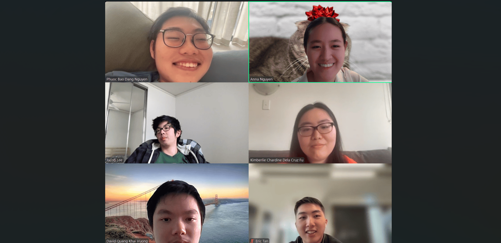
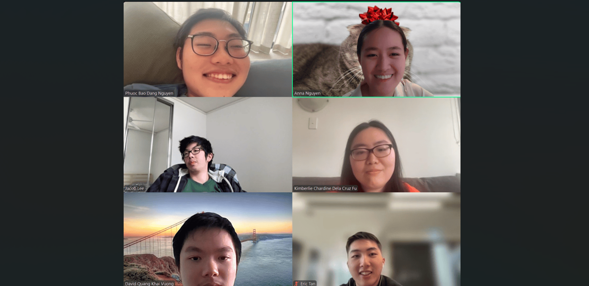

USYD Policy Chatbot
Building a chatbot using GraphRAG to answer USYD policies-related questions.
HIGHLIGHTS:
- Chatbot achieved an 88 BLEURT score.
- Implemented K-means clustering on the Neo4j graph, increasing the chatbot's response speed by approximately 30%.
- Implemented query expansion using Langchain and testing metrics for the chatbot using Ragas.
Backend | GraphRAG | AI Integration | 2024 | Done with Bitbucket (private)
 

Story Tree
Creating interactive movie plots with multiple storylines and endings.
HIGHLIGHTS:
- Utilised Spring Boot to create APIs and to handle actions related to storylines.
- Utilised JPA to perform CRUD operations on Supabase database and Postman to test API endpoints.
Backend | 2024 | GitHub

Messaging Website
Creating a secure chatroom with Flask, JavaScript, HTML and CSS.
HIGHLIGHTS:
- Implemented robust security measures.
- Created APIs to handle actions related to the chatroom and managed data using SQLAlchemy.
- Prevented Insecure Direct Object Reference (IDOR) attacks using session tokens.
Backend | Security | 2024 | GitHub

Chess Game
Creating a classic chess game with JavaFX and OOP.
HIGHLIGHTS:
- Implemented full chess logic including castling, pawn promotion and check/checkmate detection.
- Mapped mouse click events in JavaFX to specific board squares and handled user interactions through event listeners.
Backend | Frontend | Game | 2023 | GitHub


StandUpFlow at Atlassian
Atlassian ForgeHACK 2025 - 42 hours
Developed a bot (Rovo Agent) using Atlassian Forge, helping users prepare for standups by summarising their issues, including completed issues, issues progress, task prioritisation and stale issues (Fig 2).
I utilised NodeJS, Atlassian Forge API and Jira Query Language (JQL) to fetch Jira issues assigned to the current user, filter for tasks that have been in progress for over two weeks and extract key details like issue ID and summary (Fig 3).
Let's make something amazing, together!
© 2024 Anna Nguyen. All rights reserved.


© 2024 Anna Nguyen. All rights reserved.